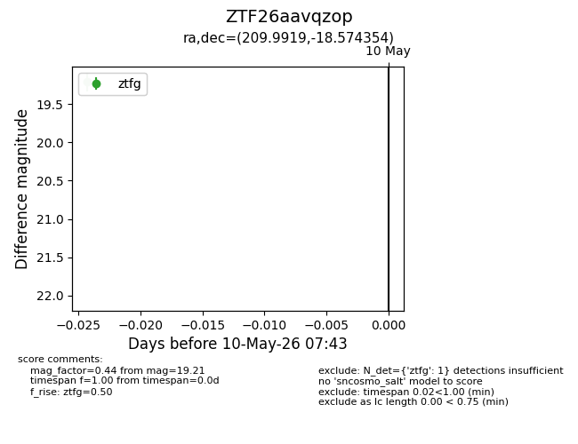
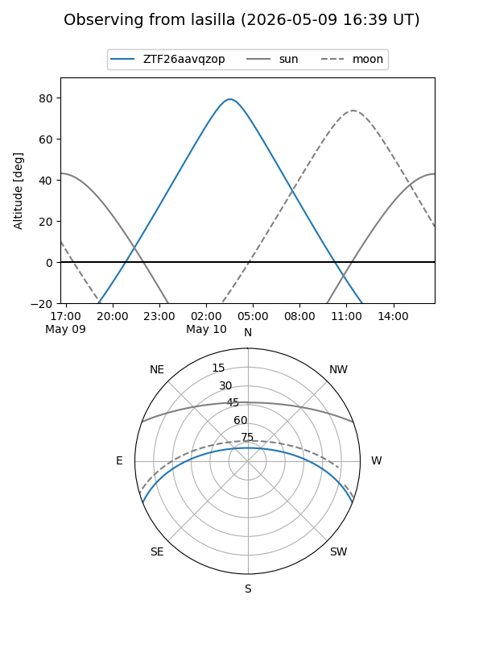
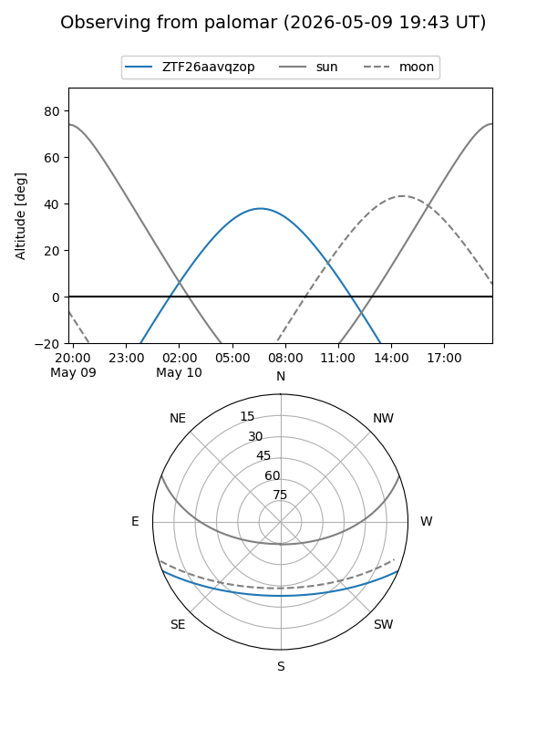

ZTF26aavqzop
Target ZTF26aavqzop at 2026-05-10 07:44
Aliases and brokers:
FINK: link
Lasair: link
ALeRCE: link
alt names
ZTF26aavqzop (ztf,fink_ztf)
Coordinates:
equatorial (ra, dec) = 209.9919,-18.57435
equatorial (HMS+DMS) = 13:59:58.06,-18:34:27.67
galactic (l, b) = (324.7772,+41.37220)
Flags:
Photometry:
last ztfg=19.21
1 ztfg detections
Lightcurve

Visibility


Additional plots